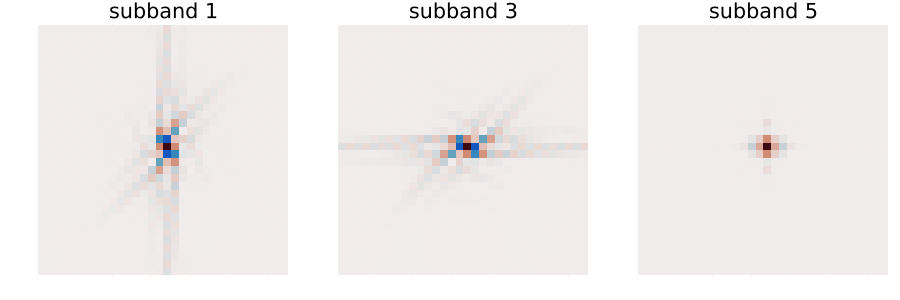

3-D Surfacelets
The surfacelet transform is the decimated counterpart of the 3-D NSCT. Both target the same frequency partition — pairs of concentric cubes radiating from the origin, at different scales and directions — but the surfacelet transform stores each subband at its own reduced resolution instead of at the full volume size. It gives up shift invariance and gets back a much smaller coefficient set, which is what makes it usable as a sparsifying transform for reconstruction problems rather than only as an analysis tool.
Setting up a transform
SurfaceletParams3D describes the decomposition: J scales, a directional depth L_array[j] per scale giving 3 * 2^L_array[j] subbands there, and the transition widths that control how smoothly neighbouring masks overlap.
using Contourlets, Random, Statistics
vol = randn(Xoshiro(11), 32, 32, 32)
params = SurfaceletParams3D(J = 2, L_array = [1, 1])
println("subbands per scale: ",
[surfacelet3d_nsubbands(params, j) for j in 1:params.J])subbands per scale: [6, 6]Planning is the expensive step: make_surfacelet3d evaluates every subband mask once over the full grid to find its frequency support box, so plan once and reuse the plan for every transform of that size.
plan = make_surfacelet3d(params, size(vol), Float64)
coeffs = surfacelet3d_forward(vol, params; plan = plan)
rec = surfacelet3d_inverse(coeffs, params; plan = plan)
println("PR error: ", maximum(abs, rec .- vol))
println("redundancy: ", round(surfacelet3d_redundancy(plan), digits = 3))
@assert maximum(abs, rec .- vol) < 1e-11PR error: 1.7763568394002505e-15
redundancy: 7.674Passing plan is optional — both transforms build one on demand — but a plan built per call dominates the run time.
Subbands have different sizes
This is the whole point of the transform, and the one structural difference from every other container in the package: Surfacelet3DCoefficients holds arrays of different shapes. A coarser scale covers a smaller frequency shell and is therefore stored on a smaller grid.
println("volume: ", size(vol))
println("coarse: ", size(coeffs.coarse))
for j in 1:params.J
sizes = unique(size.(coeffs.subbands[j]))
println("scale $j: ", length(coeffs.subbands[j]), " subbands, sizes ", sizes)
endvolume: (32, 32, 32)
coarse: (11, 11, 11)
scale 1: 6 subbands, sizes [(32, 31, 32), (32, 32, 32), (31, 32, 32)]
scale 2: 6 subbands, sizes [(21, 21, 21)]The stored element count is what surfacelet3d_redundancy reports, and it is measured from the plan's actual boxes rather than derived from an idealised partition — so it reflects the transition widths that were chosen:
stored = length(coeffs.coarse) +
sum(sum(length, s) for s in coeffs.subbands)
println("stored coefficients: ", stored, " for ", length(vol), " voxels")
println("ratio: ", round(stored / length(vol), digits = 3))stored coefficients: 251457 for 32768 voxels
ratio: 7.674Redundancy against the nonsubsampled transform
At matching parameters the nonsubsampled transform stores 1 + Σ_j 3·2^{L_j} full copies of the input. The surfacelet transform stores rather fewer:
for (J, L) in [(1, [1]), (2, [1, 1]), (2, [2, 2])]
sp = SurfaceletParams3D(J = J, L_array = L)
pl = make_surfacelet3d(sp, (32, 32, 32), Float64)
nsct = 1 + sum(3 * 2^l for l in L)
println("J=$J, L=$L: surfacelet ",
lpad(round(surfacelet3d_redundancy(pl), digits = 1), 5),
" NSCT3D ", nsct)
endJ=1, L=[1]: surfacelet 6.2 NSCT3D 7
J=2, L=[1, 1]: surfacelet 7.7 NSCT3D 13
J=2, L=[2, 2]: surfacelet 15.2 NSCT3D 25About 3× leaner at useful settings — not the redundancy of roughly 4 that Lu and Do report for the reference construction. The gap is structural, not a tuning problem; Theory — 3-D explains where it comes from (an axis-aligned support box recovers the radial decimation but almost none of the directional decimation) and what closing it would take.
The transition widths are the redundancy dial
Wider transition bands give smoother, better-localised surfacelets and larger support boxes. At a 32³ grid the effect is monotone but small, because the boxes are already quantised to whole frequency bins:
for tr in (0.2, 0.5, 0.8)
sp = SurfaceletParams3D(J = 1, L_array = [1], transition = tr,
radial_transition = tr * 0.6, angular_transition = tr * 0.6)
pl = make_surfacelet3d(sp, (32, 32, 32), Float64)
println("transition = $tr → redundancy ",
round(surfacelet3d_redundancy(pl), digits = 2))
endtransition = 0.2 → redundancy 6.06
transition = 0.5 → redundancy 6.22
transition = 0.8 → redundancy 6.31A tight frame, in the weighted sense
The masks are square roots of a partition of unity, $\sum_i V_i^2 = 1$, so analysis preserves energy. Because each subband lives on its own grid, the Parseval identity carries the grid sizes with it:
\[\sum_i N_i \, \|s_i\|^2 = N \, \|x\|^2\]
where $N_i$ is the subband's element count and $N$ the volume's.
N = length(vol)
energy = length(coeffs.coarse) * sum(abs2, coeffs.coarse)
for j in 1:params.J, band in coeffs.subbands[j]
global energy += length(band) * sum(abs2, band)
end
println("Σ Nᵢ‖sᵢ‖² / N‖x‖² = ", round(energy / (N * sum(abs2, vol)), digits = 12))Σ Nᵢ‖sᵢ‖² / N‖x‖² = 1.0That identity is what thresholding and iterative reconstruction want: noise of variance $\sigma^2$ arrives in every subband with the same variance, so a single threshold is meaningful across the whole coefficient set.
What a surfacelet looks like
Put a single unit coefficient into one subband and invert. The result is the synthesis atom of that subband — a plate-like function, elongated in the two directions transverse to its wedge and oscillating along the wedge axis.
using Plots
atom_params = SurfaceletParams3D(J = 1, L_array = [1])
atom_plan = make_surfacelet3d(atom_params, (32, 32, 32), Float64)
# Transforming a zero volume gives a coefficient set of the right shapes.
function atom(k)
c = surfacelet3d_forward(zeros(32, 32, 32), atom_params; plan = atom_plan)
band = c.subbands[1][k]
band[1, 1, 1] = 1.0 # a single unit coefficient, at the band's origin
return circshift(surfacelet3d_inverse(c, atom_params; plan = atom_plan),
(16, 16, 16))
end
function panel(k)
slice = atom(k)[:, :, 17]
m = maximum(abs, slice)
return heatmap(slice, color = :balance, clims = (-m, m), aspect_ratio = :equal,
axis = false, colorbar = false, title = "subband $k")
end
plots = [panel(k) for k in (1, 3, 5)]
plot(plots...; layout = (1, 3), size = (900, 300))
Each panel is the central x₃ slice of a different subband's atom, on its own symmetric colour scale. Subbands 1 and 3 belong to the first two hourglasses and oscillate along their respective axes; subband 5 belongs to the third, whose axis is perpendicular to the slice, so what is left in-plane is its transverse envelope.
Directional selectivity
Perfect reconstruction proves nothing about the directional partition — a wrong tiling reconstructs just as exactly, because the masks are a partition of unity whatever shape they have. The check that matters is which subband a plane wave lands in. Here the frequency vector is steepest along axis 3, so the energy concentrates in the third hourglass.
n = 32
kvec = (2, 3, 13)
wave = [
cospi(2 * (kvec[1] * (i - 1) + kvec[2] * (j - 1) + kvec[3] * (l - 1)) / n)
for i in 1:n, j in 1:n, l in 1:n
]
wp = SurfaceletParams3D(J = 1, L_array = [1])
wc = surfacelet3d_forward(wave, wp; plan = make_surfacelet3d(wp, (n, n, n), Float64))
e = [length(b) * sum(abs2, b) for b in wc.subbands[1]]
best = argmax(e)
println("winning subband: ", best, " of ", length(e))
println("its share of the directional energy: ", round(e[best] / sum(e), digits = 3))winning subband: 6 of 6
its share of the directional energy: 0.723Subbands are ordered hourglass-major: with 3 * 2^L subbands per scale, indices 1:2^L belong to the first hourglass ($|\omega_1|$ dominant), the next 2^L to the second, and the last 2^L to the third.
nwedge = 2^wp.L_array[1]
println("hourglass of the winner: ", (best - 1) ÷ nwedge + 1)
@assert (best - 1) ÷ nwedge + 1 == 3hourglass of the winner: 3Not shift-invariant — and that is the trade
The NSCT3D is exactly equivariant under circular shifts. The surfacelet transform is not: decimation is precisely what breaks it.
s = (3, -2, 5)
a = surfacelet3d_forward(vol, params; plan = plan)
b = surfacelet3d_forward(circshift(vol, s), params; plan = plan)
rel(x, y) = maximum(abs, x .- y) / maximum(abs, x)
println("shifted vs circshifted coefficients, scale 1 subband 1: ",
round(rel(circshift(a.subbands[1][1], s), b.subbands[1][1]), digits = 3))shifted vs circshifted coefficients, scale 1 subband 1: 0.083The shifted coefficients are not a shift of the originals — the decimated grid does not carry the shift. Reconstruction is unaffected; only the coefficient values move. If a downstream algorithm needs shift invariance (shift-invariant denoising, say), use nsct3d_forward and pay the redundancy.
Choosing between the two
nsct3d_forward | surfacelet3d_forward | |
|---|---|---|
| Redundancy | 1 + Σ_j 3·2^{L_j} (49 at J=3, L=[2,2,3]) | ≈ 16 at the same settings |
| Shift invariance | exact | no |
| Subband sizes | all equal to the input | decimated, per subband |
| Streaming form | yes (do block, one subband at a time) | no — the set already fits |
| GPU | CUDA / OpenCL verified | CUDA / OpenCL verified (plan on the host, then Adapt.adapt) |
| Use for | analysis, shift-invariant denoising | sparsifying transform in reconstruction |